A Conventional / Free-Flow Combined Tolling Solution for Britain's Best Motorway
SICE is a global technology company specializing in Intelligent Transportation Systems (ITS), tolling, traffic management, and smart infrastructure solutions. Part of the Vinci Group, SICE delivers end-to-end technology solutions across multiple continents.
Operating in over 30 countries with extensive experience in ITS projects across Europe, Americas, and Middle East.
Proprietary SIDERA TOLLING platform delivering cutting-edge tolling, traffic management, and smart mobility solutions.
Decades of experience delivering mission-critical infrastructure technology to governments and private operators worldwide.
Modern cloud-based deployments on Oracle Cloud and other platforms ensuring scalability, reliability, and security.
Our Global Footprint — 30+ Countries
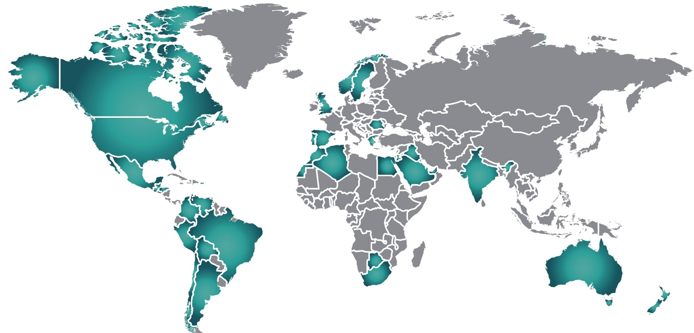
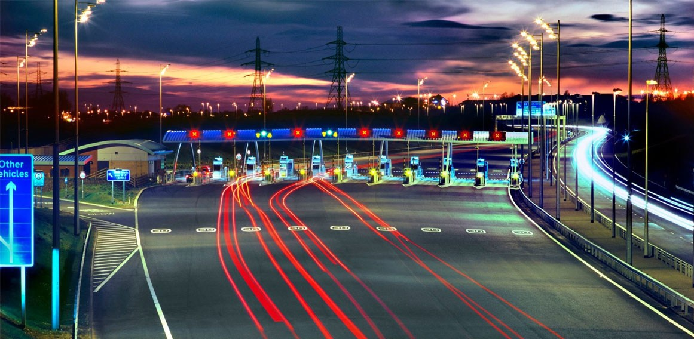
Midland Expressways Limited (MEL) entrusted SICE with the design, implementation and support of a new Tolling System for the M6 Toll highway surrounding Birmingham in the UK. Recently "crowned" as Britain's best motorway by 32% of HGV drivers, SICE is delivering an end-to-end solution for this project.
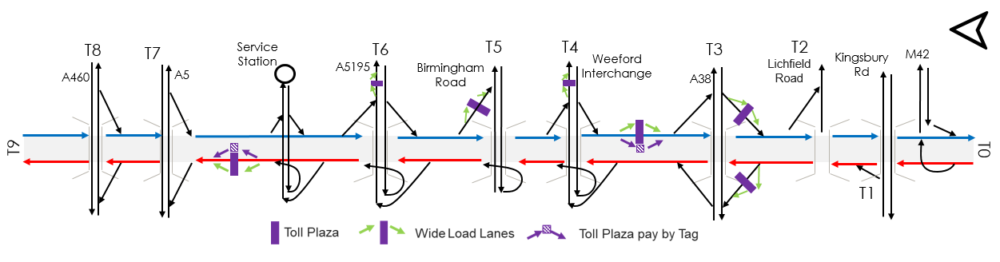
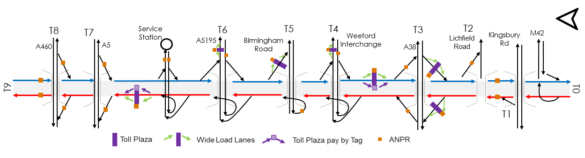
Modernize the existing conventional open scheme plazas with state-of-the-art technology
Enable charging per distance travelled replacing the previous flat-rate toll for whole length
Install ANPR technology in all slip roads and mainline plaza lanes to fully close the road and track all vehicle entries and exits
Deliver an improved customer experience with a full range of different products and cloud-based solutions
Complete the upgrade without affecting current traffic and toll collection operations
Reduce the physical assets to be maintained and use the Cloud as possible
Comprehensive end-to-end tolling solution covering roadside equipment, operational systems, and commercial platforms.
Standard and Wide-Load toll lanes with Automatic Machine (bank cards) and DSRC Electronic Toll Collection
Complete Toll Plaza Management System for efficient plaza operations and monitoring
ANPR-Only single gantry Roadside Equipment for seamless free-flow tolling
Toll Point Concentrator and Controllers managing data flow between roadside and back-office systems
Advanced Automatic Vehicle Identification for manual image review minimization
OBO with trip building functionality for complete toll transaction processing
Contact channels including public web portal for customer self-service
CBO with Data Migration from old system and interfaces with banks
45 toll lanes (7 of them extra-wide type) in 7 toll plazas
Accepted Payment Methods
Phased approach to install, test and go-live whilst keeping lanes operational and traffic uninterrupted at all times.
ANPR-only free-flow sites with flexible deployment options
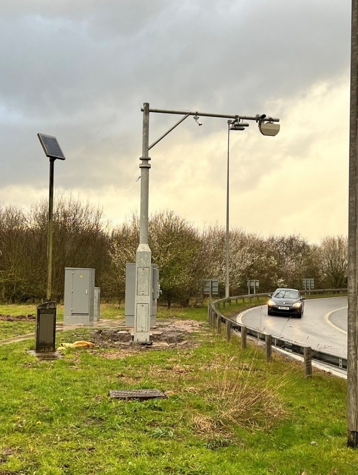
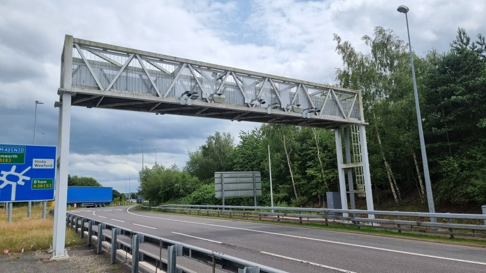
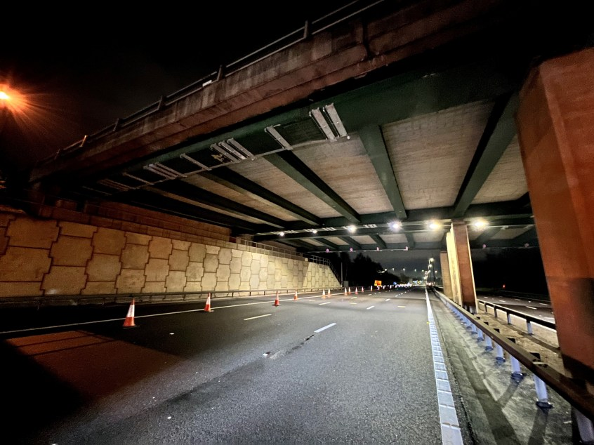
Central monitoring of alarms and remote management of toll points roadside systems.
Well suited for centralised operations overseeing remote and widely dispersed assets across extensive geographic areas.
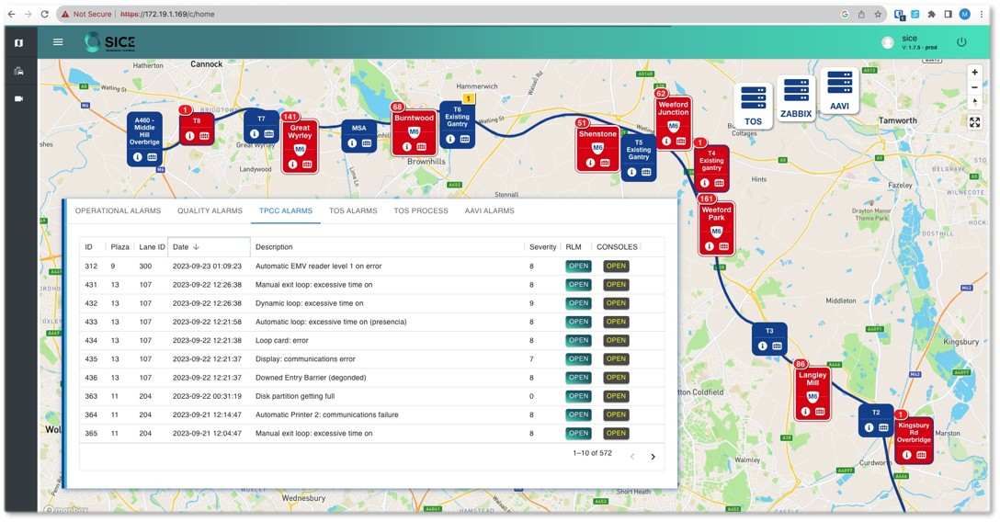
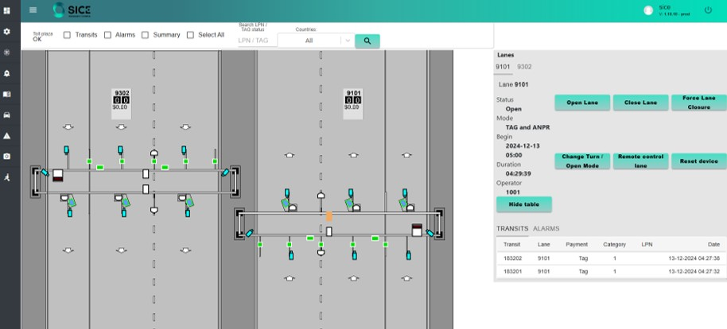
Minimise the number of transactions requiring Manual Verification and therefore reduce operational costs.
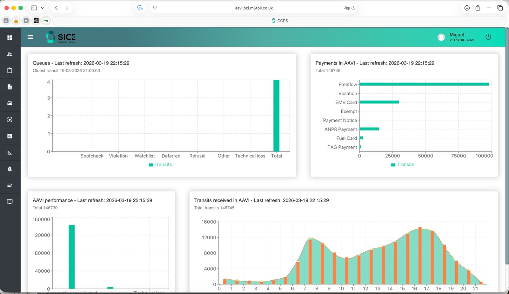
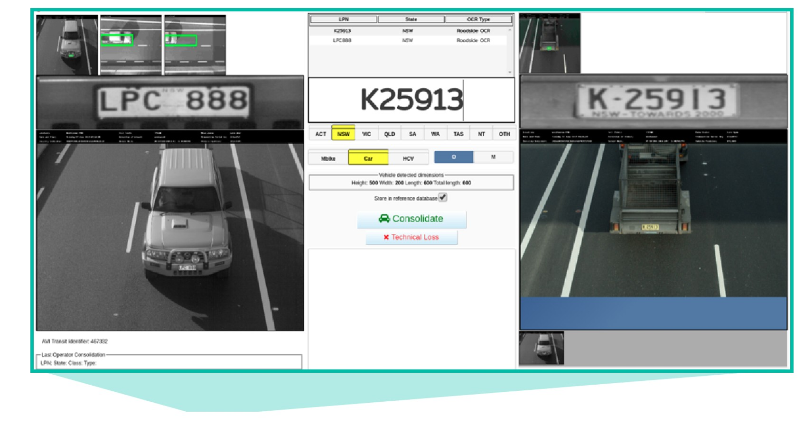
SICE's proprietary platform for Operational and Commercial Back Office — a comprehensive cloud-deployed solution on Oracle Cloud.
Central platform connecting roadside equipment with the commercial billing layer
Click Next Step to walk through how a transit becomes a rated trip
Raw toll transactions arrive from all roadside equipment — conventional lanes & freeflow gantries — and are ingested by the OBO.
Transactions are grouped into candidate trips by correlating vehicle identity, timestamps and route — forming preliminary trip records.
Once the trip timeout expires with no further transactions, the candidate group is consolidated into a definitive, immutable trip record.
A tariff is applied based on vehicle class, product type and route. The rated trip is dispatched to the Commercial Back-Office for billing.
Full commercial layer: accounts, billing, enforcement and customer-facing web portal
Full lifecycle management of customer accounts — registration, profile updates, product assignments and account status control.
Automated charge calculation, statement generation and invoice issuance across all payment methods and product types.
Operator portal for handling enquiries, disputes, refunds and account adjustments — integrated with ticketing workflows.
End-to-end debt recovery and prosecution workflow for unpaid tolls — from first notice through to legal enforcement.
Configurable toll products, tariff schemes and promotional offers — supporting TAG, PAYG, pre-pay and fleet contracts.
Secure data exchange with banks, TAG issuers, DVLA, interoperability hubs and third-party payment processors.
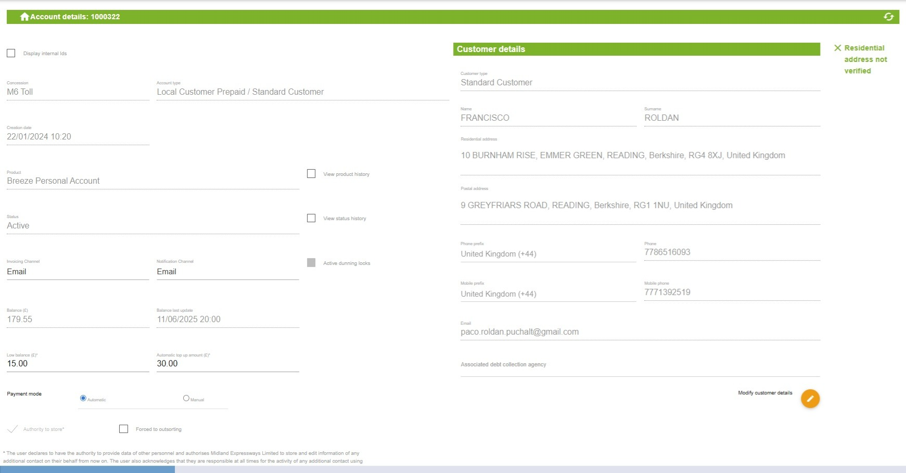
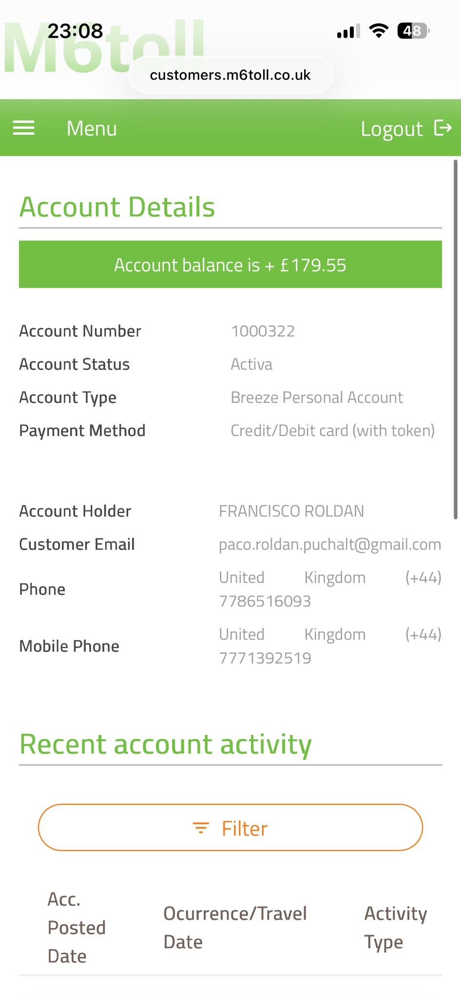
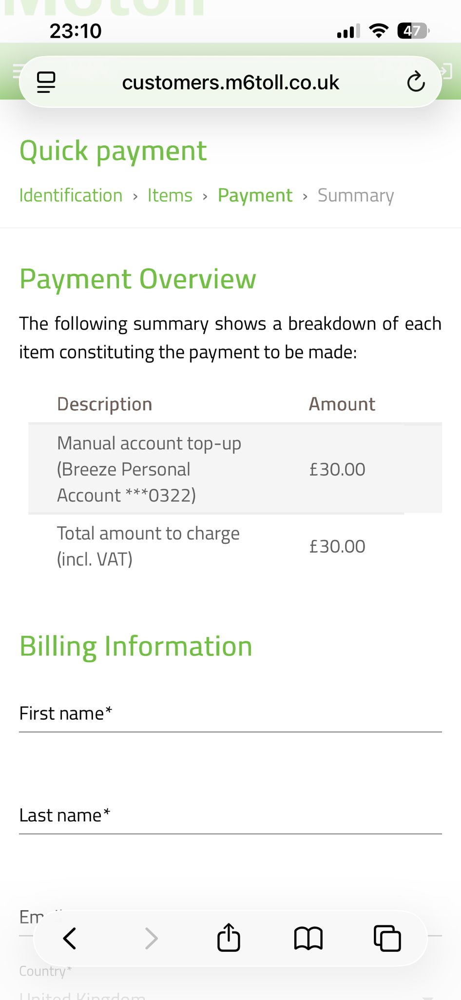
NTS Freeflow & Overbridge performance metrics — May 2025 to February 2026
Contract awarded by MEL, entrusting SICE with design and implementation of the new tolling system.
Agile sprints begin across back-office and roadside workstreams with continuous integration established.
System architecture, roadside equipment design and software specifications signed off by the client.
First live toll lane accepting Pay-As-You-Go — validating end-to-end system integration.
PAYG validation and user acceptance testing across lanes, freeflow gantries and back-office modules.
Legacy data migrated and all toll plazas go live on the new SICE platform.